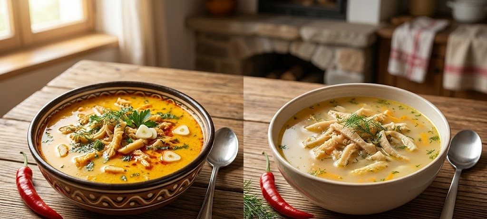

Câte calorii are ciorba de burtă? Clasic și varianta fără făină

ClasicLightCiorbă de burtă clasică și varianta low-carb: comparația
Clasic: „Ciorbă de burtă cu smântână”, catalogul de alimente NutriRO (105 kcal la 100 g), calculat la 461 g. Light: rețeta „Ciorbă de burtă low-carb (fără făină)” din aplicație.
Vezi cum se face rețeta lightIngrediente, mod de preparare și calculator de porții→Toate cifrele
Clasic: „Ciorbă de burtă cu smântână” (catalogul de alimente). Light: rețeta „Ciorbă de burtă low-carb (fără făină)”.
| Clasic | Light | |
|---|---|---|
| Calorii la 100 g | 105 kcal | 71 kcal |
| Proteine la 100 g | 9 g | 8 g |
| Grăsimi la 100 g | 6,5 g | 4 g |
| Carbohidrați (fără fibre) la 100 g | 3,7 g | 0,8 g |
| O porție de 461 g | ≈ 484 kcal | ≈ 329 kcal |
Coloana „Clasic” are valorile la 100 g din catalogul de alimente NutriRO. Pentru rețeta light, greutatea porției e suma ingredientelor împărțită la numărul de porții, aceeași regulă ca în aplicație; după gătire greutatea se poate schimba puțin.
Ce s-a schimbat în rețeta low-carb?
- Fără făină: ciorba se îngroașă doar cu gălbenuș de ou și smântână de gătit.
- Smântână măsurată: 0 g de smântână de gătit la 2 porții, amestecată cu un gălbenuș și usturoi.
- Rămân burta fiartă, oțetul de mere, usturoiul și ardeiul iute, adică gustul cunoscut.
Rețeta „Ciorbă de burtă low-carb (fără făină)” are 2 porții, se face în aproximativ 45 de minute (dificultate: simplu). O porție are ≈ 461 g și 329 kcal: 36,7 g proteine, 18,3 g grăsimi, 3,9 g carbohidrați (fără fibre) și 0,4 g fibre.
Vezi rețeta completă: ingrediente, mod de preparare și calculator de porții →
Ce schimbă caloriile ciorbei de burtă?
Cele mai multe calorii vin din smântână și din grăsimea de pe burtă și din zeamă. Pâinea sau chifla de lângă se socotește separat, ca aliment distinct.
Cum o notezi în NutriRO?
- Ai mâncat-o la restaurant sau la cineva acasă? Caută „Ciorbă de burtă cu smântână” în catalogul de alimente și scrie câte grame a avut farfuria.
- Ai gătit-o light? Deschide Rețete, caută „Ciorbă de burtă low-carb” și adaugă porția în jurnal.
Întrebări frecvente
Câte calorii are o porție de ciorbă de burtă?
Cu smântână, aproximativ 484 kcal pentru o porție de 461 g, după valoarea din catalogul NutriRO (105 kcal la 100 g). Fără pâine.
Ciorba de burtă are carbohidrați?
Puțini. Varianta clasică din catalog are 3,7 g carbohidrați la 100 g, iar varianta low-carb fără făină are 3,9 g pe toată porția.
Cum fac ciorba de burtă mai ușoară?
Renunță la făină, pune smântâna măsurată (nu din ochi) și leagă ciorba cu gălbenuș. Rețeta low-carb din NutriRO are exact aceste schimbări.
Toate rețetele de pe această pagină sunt în aplicația NutriRO, cu ingredientele, modul de preparare și caloriile pe porție. Aplicația e doar în limba română, pentru Android.
Valorile sunt orientative și depind de ingredientele și cantitățile folosite. NutriRO nu înlocuiește sfatul unui medic sau dietetician.